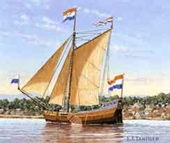
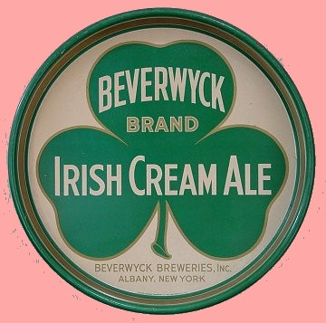

|
by
Referenced variously, Beverwyck is the popular and traditional name given to the community of fur traders that first emerged (perhaps as early as the 1640s) along the river to the north of Fort Orange. That community of interest soon superseded the "fort" as settlers set down permanent roots. The name came into official use in 1652 when the Dutch West India Company established a judicial jurisdiction for the land north of the trading post/fort. That act began a legacy of home rule for Albany that was primarily responsible for its development into a pre-urban center. Immediately following, the first houselots were parceled out. By the end of the decade, a log palisade had enclosed the settlement. Anchored by an increasingly broad range of issues that were considered by the Beverwyck court, by 1660 that community had achieved a commercial, production, and services identity that would make it increasingly different from surrounding Rensselaerswyck - basically a plantation of small farms and budding processing operations. Although the Indian fur trade was at the heart of the community economy, a diversity of functions characterized the settlement from its earliest days. During the 1650s, Beverwyck couples began to raise large families that would give the growing settlement its cultural character for much of the next century. By 1660, the fur trade had become so competitive that groups of traders were petitioning the court regarding conflicting visions of the fur trading process. In 1664, New Netherland fell to the English and Beverwyck was renamed "Albany." The Beverwyck court was continued as the court of Albany, Rensselaerswyck, and Schenectady. In 1673, New York was retaken by the Dutch and Albany was called "Willemstadt." The English regained jurisdiction in 1674 and the community has been called Albany ever since! Today, the names of many Albany-area places, organizations, and things recall the community's earliest incarnation. In 2002, a year-long commemoration marked the 350th anniversary of Beverwyck's formal establishment. 
The term "Beverwyck" has several folk origins and means different things to different people! These may be considered here in the future. The name of the place also has been variously spelled. The Colonial Albany Social History Project has adopted the traditional spelling used on this page for the sake of accessibility and because it is the spelling most frequently encountered in historical resources! Sources: The comprehensive and most readable source on the community is the book by Janny Venema entitled Beverwijck: A Dutch Village on the American Frontier, 1652-1664 - a must read for all students and comparable to the most ambitious work on other early American communities. Thankfully, it is destined to serve as a primer for our subsequent work on Albany's ancestor! Also accessible in print is Janny Venema, "Poverty and Charity in Seventeenth-Century Beverwijck/Albany, 1652-1700," New York History (October 1999). Beverwyck pre-history is the subject of a recent and well illustrated archeological study by James W. Bradley. The distribution of lots within Beverwyck is considered in detail by Venema in Beverwijck. Her exposition is aided and supported by several diagram maps. We have just begun to come to terms with these initial settlers of the Albany community. However, that monumental task cannot be a prime concern of the PCALHW initiative. We do better with our official starting point for serious enquiry = the people in the "city" 1697 or maybe (but not seriously) 1679. Painting of a Dutch ship De Eendracht with Beverwyck in the background set about 1656 by L. F. Tantillo (1989). It exemplifies Beverwyck's mythic quality. Copied from a poster produced by Len Tantillo entitled "Vessels of the Upper Hudson" in the CAP Graphics Archive.
first posted 06/06/01; last revised 8/22/14 |
{kind=link}